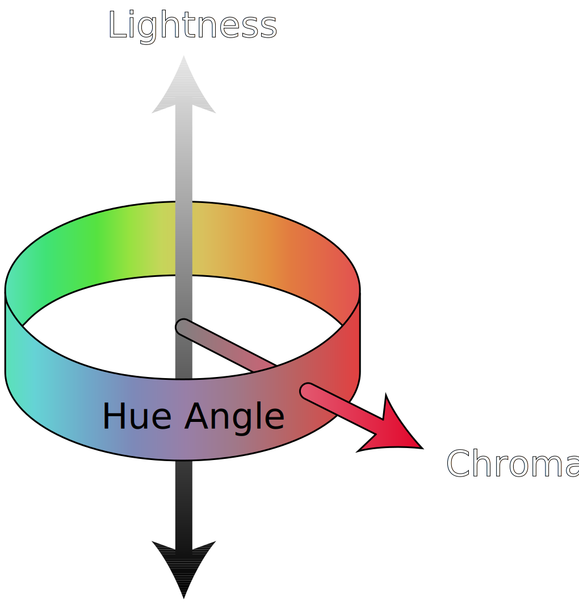
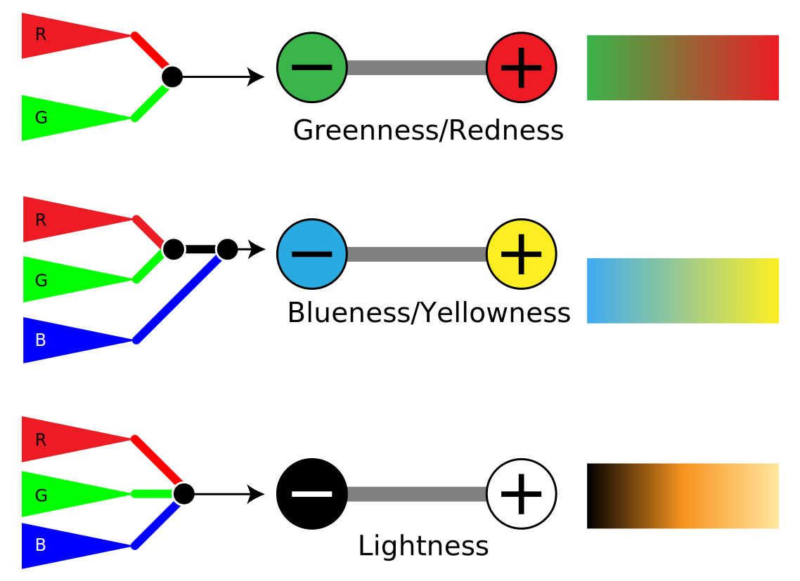

Below is a side-by-side comparison of RGB color space shown as the typical RGB cube (right) and the same volume after being transformed into CIELAB. The volume is approximated by taking the convex hull of a discretized CIELAB space.
Above: additive vs. subtractive color.
Above: CIELCh color space
Above: opponent processing.